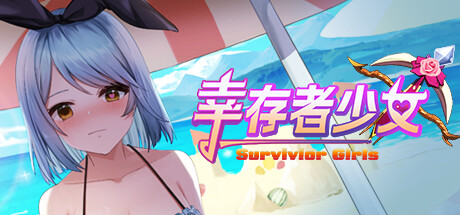
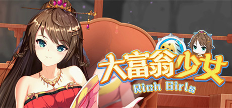
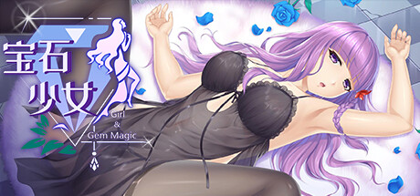
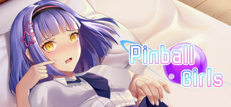
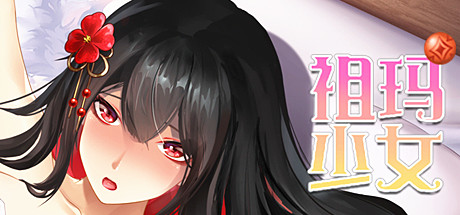

DLC
A LITTLE MORE TIME TOGETHER
心动的故事，
还有下一章。
欢迎来到少女系列 DLC 下载中心。
找到你喜欢的游戏，把更多精彩带回游戏里。
THE GIRLS COLLECTION
挑选你的心动 全部 6 款
下载文件托管于 MediaFire

DLC
DLC
DLC
补丁包
DLC点击「前往下载」会在新标签页打开对应的 MediaFire 文件页面。
READY TO PLAY
三步，继续你的故事
- 01
选择游戏，下载文件
在上方找到对应游戏，前往 MediaFire 下载压缩包。安装前请先准备好对应的游戏本体。
- 02
解压并阅读安装说明
关闭游戏，解压下载文件，按包内说明安装。需要替换文件时，建议先备份原文件与存档。
- 03
重新启动，开启精彩
完成安装后重新启动游戏。如未生效，请再次核对游戏版本、安装目录与包内说明。
各款游戏的安装方式可能不同，具体步骤请以下载包内的说明为准。
A LITTLE HELP
也许你想知道
下载与安装的小提示，
让下一次相遇更顺利。
下载后应该把文件放在哪里？
请先解压并查阅压缩包内的安装说明。如果说明要求打开游戏目录，可以在 Steam 库中右键对应游戏，选择「管理 → 浏览本地文件」。不同游戏的补丁路径可能不同，请按对应说明操作。
为什么球球少女下载包里还有斗地主少女？
球球少女提供的链接指向《斗地主少女 + 球球少女补丁》合集压缩包。解压后，请选择与你所安装游戏对应的内容，并阅读其中的说明。
MediaFire 页面打不开或下载失败怎么办？
可以稍后重试，或尝试更换浏览器与网络。请确认打开的是 mediafire.com 文件页面。如果页面提示文件已删除，请通过对应游戏的 Steam 社区反馈失效链接。
安装后没有生效怎么办？
先关闭并重新启动游戏，再核对压缩包内的说明、游戏版本与安装目录。若仍未生效，请在对应游戏的 Steam 社区提供游戏名称与问题详情；避免直接删除存档。